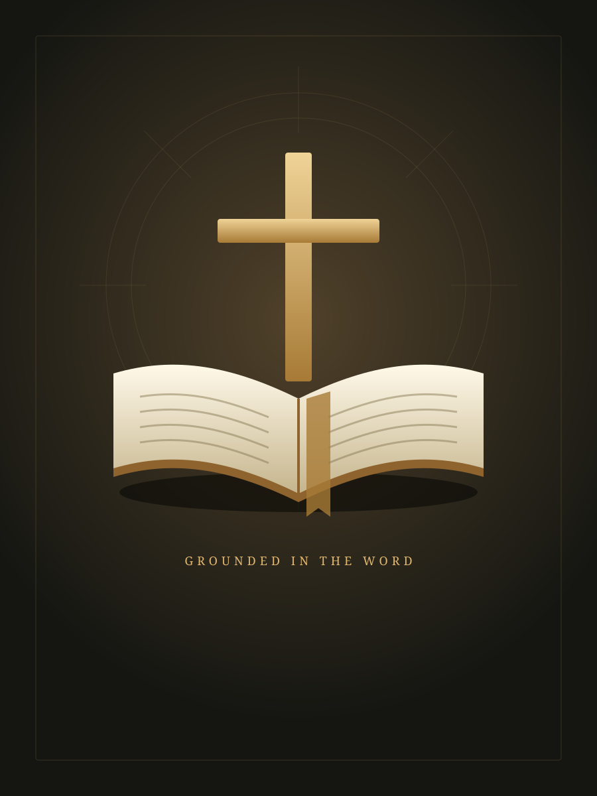

A MOMENT IN THE WORD
Your study desk
A quiet place to read, reflect, and grow in faith.
THE LATEST STUDY
Preparing a place in the Word.

A steady rhythm of study.
Choose a study and make a little room for Scripture today.
Explore Scripture
Fresh from the library
— studies available offline · New studies checked every 15 minutes while the app is open.
YOUR READING LIBRARY
Study library
Find your next question, passage, or moment of encouragement.
Opening the library…
A different path through the Word.
No studies match these filters. Try another search or return to the full library.
FOLLOW THE SCRIPTURE
Bible index
Explore the books and people identified throughout your study library.
READ THE WORD
66 books · 2 versionsKing James Bible
Hover over a word for its Hebrew or Greek dictionary meaning. Click or focus a word to explore it.
Your complete Bible is available locally.
Meanings come from the verse’s Strong’s numbers. A phrase may link to more than one original word. Italics indicate words added by the KJV translators.
KJV/OSIS & Baiboly Malagasy (1865): CrossWire via Scrollmapper · Strong’s dictionaries: Open Scriptures, CC-BY-SA. Sources & credits
A PATH FOR EVERY SEASON
Study topics
Follow a theme through the Word. Use library filters to combine topics.
YEARS IN THE WORD
Study timeline
Return to a year of teaching, reflection, and encouragement.
A LIVING STUDY LIBRARY
Library updates
New Bible studies, collected quietly in the background.
Connecting to your library
Your studies are here.
The complete local archive is available for reading.
CHECKING EVERY15 minutes
While Gospel Warrior is open
NEXT CHECK—
Connecting…
LAST CHECKNot yet
A check runs when the app opens
Keep your library growing
AUTOMATIC BY DEFAULTRecently collected
YOUR LATEST STUDIESOnline checks need an internet connection and publicly available source studies. If a check cannot complete, your offline library stays ready and the next scheduled check will retry.
YOUR MULTILINGUAL LIBRARY
Study translations
Complete French and Malagasy studies are prepared in the background and saved for offline reading.
Français
0 / —Complete studies ready offline
Malagasy
0 / —Complete studies ready offline
Checking translation progress…
The collection contains millions of words, so preparing both languages is a long-running job. The Mac app translates locally: keep it open; no internet or translation-service account is needed. Progress is saved paragraph by paragraph and resumes after reopening. Opening a study prioritizes its translation.
These are machine translations. The counters include only complete translated studies. Pending studies show their original English title until their translated version is ready.
Your study notebook
Notes save automatically.
Highlights & underlining
Passage bookmarks
Take a moment. Let the Word take root.